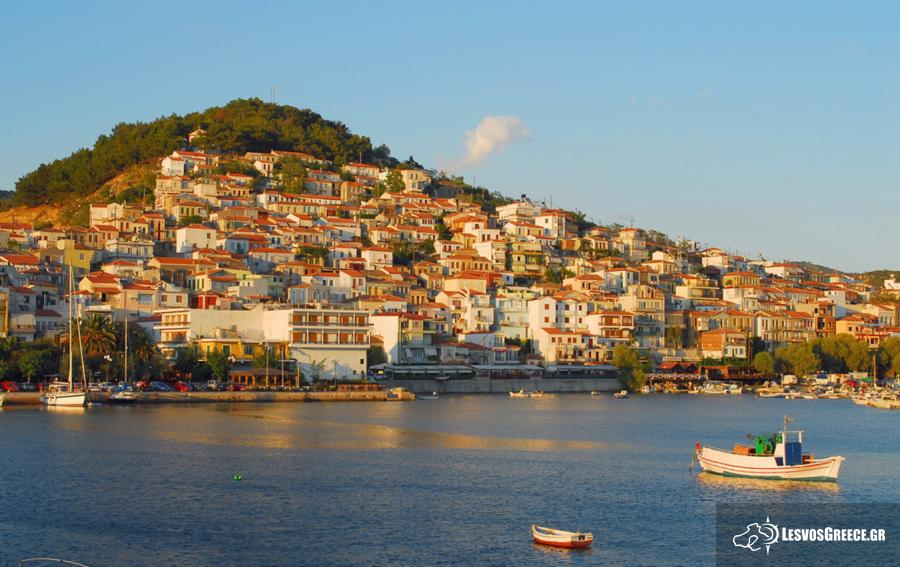
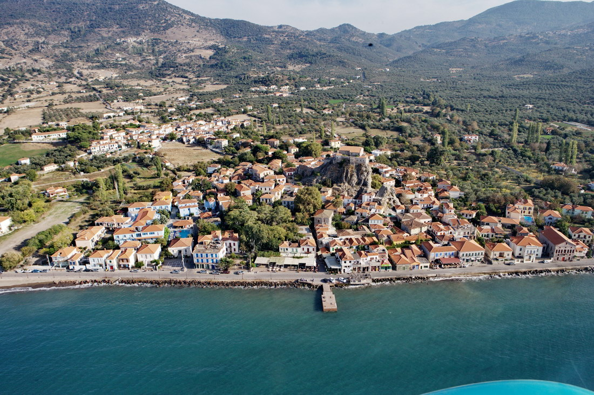
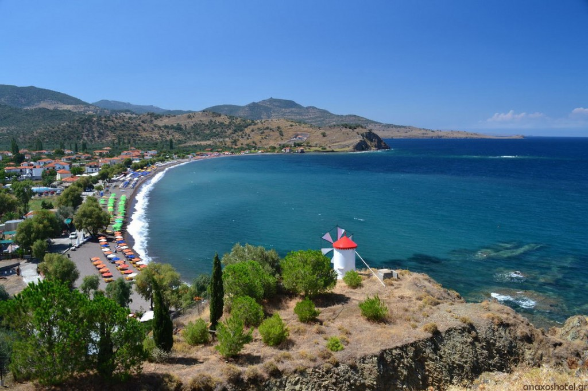
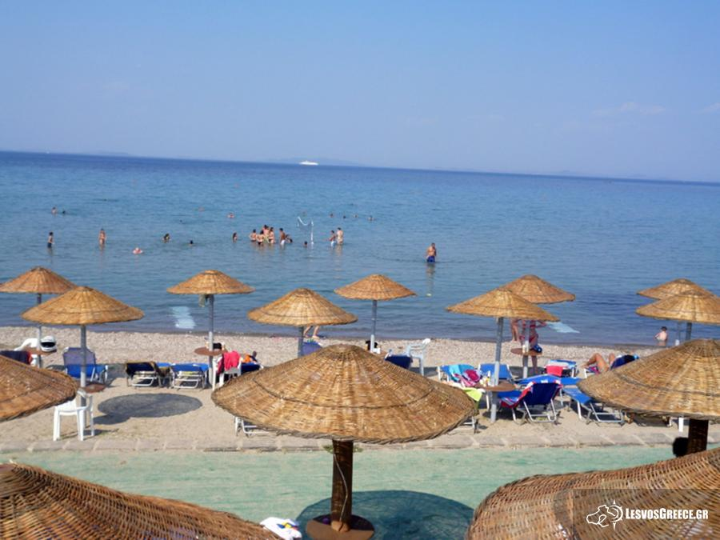
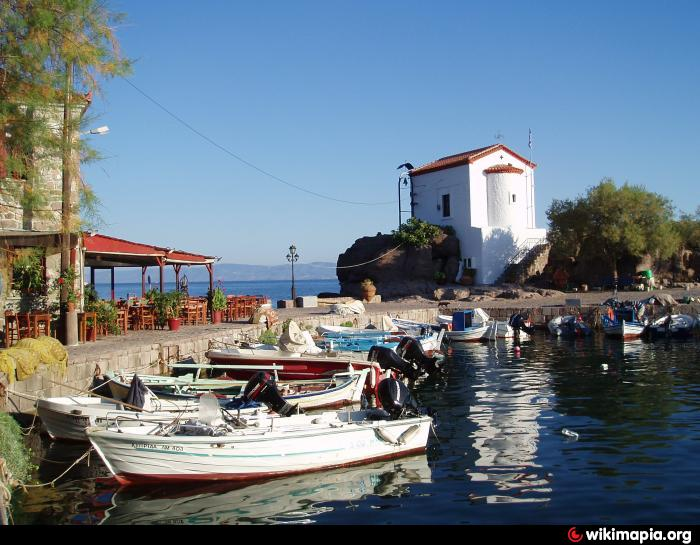
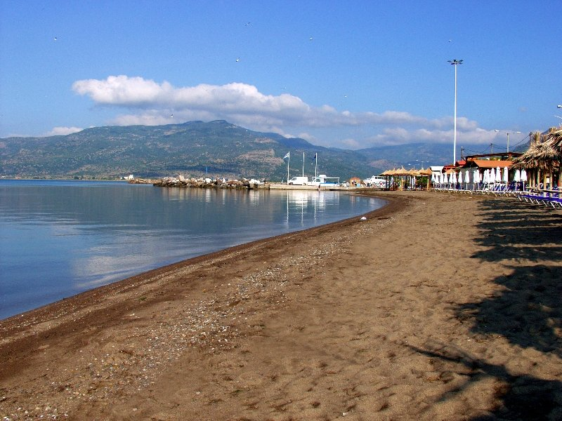

<!DOCTYPE html>
<head>    
    <meta http-equiv="content-type" content="text/html; charset=UTF-8" />
    
        <script>
            L_NO_TOUCH = false;
            L_DISABLE_3D = false;
        </script>
    <title>Harha maps</title>
    <script src="https://cdn.jsdelivr.net/npm/leaflet@1.5.1/dist/leaflet.js"></script>
    <script src="https://code.jquery.com/jquery-1.12.4.min.js"></script>
    <script src="https://maxcdn.bootstrapcdn.com/bootstrap/3.2.0/js/bootstrap.min.js"></script>
    <script src="https://cdnjs.cloudflare.com/ajax/libs/Leaflet.awesome-markers/2.0.2/leaflet.awesome-markers.js"></script>
    <link rel="stylesheet" href="https://cdn.jsdelivr.net/npm/leaflet@1.5.1/dist/leaflet.css"/>
    <link rel="stylesheet" href="https://maxcdn.bootstrapcdn.com/bootstrap/3.2.0/css/bootstrap.min.css"/>
    <link rel="stylesheet" href="https://maxcdn.bootstrapcdn.com/bootstrap/3.2.0/css/bootstrap-theme.min.css"/>
    <link rel="stylesheet" href="https://maxcdn.bootstrapcdn.com/font-awesome/4.6.3/css/font-awesome.min.css"/>
    <link rel="stylesheet" href="https://cdnjs.cloudflare.com/ajax/libs/Leaflet.awesome-markers/2.0.2/leaflet.awesome-markers.css"/>
    <link rel="stylesheet" href="https://rawcdn.githack.com/python-visualization/folium/master/folium/templates/leaflet.awesome.rotate.css"/>
    <style>html, body {width: 100%;height: 100%;margin: 0;padding: 0;}</style>
    <style>#map {position:absolute;top:0;bottom:0;right:0;left:0;}</style>
    
            <meta name="viewport" content="width=device-width,
                initial-scale=1.0, maximum-scale=1.0, user-scalable=no" />
            <style>
                #map_3af6c0ce9bbc4ee79fe0607e30ac80c8 {
                    position: relative;
                    width: 100.0%;
                    height: 100.0%;
                    left: 0.0%;
                    top: 0.0%;
                }
            </style>
        
</head>
<body>    
    
            <div class="folium-map" id="map_3af6c0ce9bbc4ee79fe0607e30ac80c8" ></div>
        
</body>
<script>    
    
            var map_3af6c0ce9bbc4ee79fe0607e30ac80c8 = L.map(
                "map_3af6c0ce9bbc4ee79fe0607e30ac80c8",
                {
                    center: [39.310924, 26.336013],
                    crs: L.CRS.EPSG3857,
                    zoom: 9,
                    zoomControl: true,
                    preferCanvas: false,
                }
            );

            

        
    
            var tile_layer_3f8369dc89be49e1a8f11363e922e7bb = L.tileLayer(
                "https://{s}.tile.openstreetmap.org/{z}/{x}/{y}.png",
                {"attribution": "Data by \u0026copy; \u003ca href=\"http://openstreetmap.org\"\u003eOpenStreetMap\u003c/a\u003e, under \u003ca href=\"http://www.openstreetmap.org/copyright\"\u003eODbL\u003c/a\u003e.", "detectRetina": false, "maxNativeZoom": 18, "maxZoom": 18, "minZoom": 0, "noWrap": false, "opacity": 1, "subdomains": "abc", "tms": false}
            ).addTo(map_3af6c0ce9bbc4ee79fe0607e30ac80c8);
        
    
            var marker_9f321e74d5c4460cb850078f04e11741 = L.marker(
                [39.310924, 26.336013],
                {}
            ).addTo(map_3af6c0ce9bbc4ee79fe0607e30ac80c8);
        
    
            var icon_28019c75014f4e0dba7dd983c0a08782 = L.AwesomeMarkers.icon(
                {"extraClasses": "fa-rotate-0", "icon": "cloud", "iconColor": "white", "markerColor": "red", "prefix": "glyphicon"}
            );
            marker_9f321e74d5c4460cb850078f04e11741.setIcon(icon_28019c75014f4e0dba7dd983c0a08782);
        
    
        var popup_a9a7761fbd1c48b1ae13d38bd812fe97 = L.popup({"maxWidth": "100%"});

        
            var html_2ac0245190384a84b4782108ac7d74e9 = $(`<div id="html_2ac0245190384a84b4782108ac7d74e9" style="width: 100.0%; height: 100.0%;"></img>Χρυσή άμμος</div>`)[0];
            popup_a9a7761fbd1c48b1ae13d38bd812fe97.setContent(html_2ac0245190384a84b4782108ac7d74e9);
        

        marker_9f321e74d5c4460cb850078f04e11741.bindPopup(popup_a9a7761fbd1c48b1ae13d38bd812fe97)
        ;

        
    
    
            marker_9f321e74d5c4460cb850078f04e11741.bindTooltip(
                `<div>
                     Χρυσή άμμος
                 </div>`,
                {"sticky": true}
            );
        
    
            var marker_0f6961b12be44a3d9d807b043941d072 = L.marker(
                [38.975646, 26.368808],
                {}
            ).addTo(map_3af6c0ce9bbc4ee79fe0607e30ac80c8);
        
    
            var icon_7231d1136df64455aa9f8b45a3102ee6 = L.AwesomeMarkers.icon(
                {"extraClasses": "fa-rotate-0", "icon": "cloud", "iconColor": "white", "markerColor": "red", "prefix": "glyphicon"}
            );
            marker_0f6961b12be44a3d9d807b043941d072.setIcon(icon_7231d1136df64455aa9f8b45a3102ee6);
        
    
        var popup_b74e721aa5e04aa0b682f2abc6e5a302 = L.popup({"maxWidth": "100%"});

        
            var html_c13898c5f3c9441884cf1efbfe12b16d = $(`<div id="html_c13898c5f3c9441884cf1efbfe12b16d" style="width: 100.0%; height: 100.0%;"></img>Αγιος Ισίδωρος</div>`)[0];
            popup_b74e721aa5e04aa0b682f2abc6e5a302.setContent(html_c13898c5f3c9441884cf1efbfe12b16d);
        

        marker_0f6961b12be44a3d9d807b043941d072.bindPopup(popup_b74e721aa5e04aa0b682f2abc6e5a302)
        ;

        
    
    
            marker_0f6961b12be44a3d9d807b043941d072.bindTooltip(
                `<div>
                     Άγιος Ισίδωρος
                 </div>`,
                {"sticky": true}
            );
        
    
            var marker_64f79f6a423c4271a745a8b45fe9c94e = L.marker(
                [39.327671, 26.177189],
                {}
            ).addTo(map_3af6c0ce9bbc4ee79fe0607e30ac80c8);
        
    
            var icon_e17222af3ca34aa7b6a291f53e61d4cc = L.AwesomeMarkers.icon(
                {"extraClasses": "fa-rotate-0", "icon": "cloud", "iconColor": "white", "markerColor": "red", "prefix": "glyphicon"}
            );
            marker_64f79f6a423c4271a745a8b45fe9c94e.setIcon(icon_e17222af3ca34aa7b6a291f53e61d4cc);
        
    
        var popup_e5b992748012453b97b81ae36cb08dcb = L.popup({"maxWidth": "100%"});

        
            var html_2d1d607971854cc8907748d392bd9fb9 = $(`<div id="html_2d1d607971854cc8907748d392bd9fb9" style="width: 100.0%; height: 100.0%;"></img>Πέτρα</div>`)[0];
            popup_e5b992748012453b97b81ae36cb08dcb.setContent(html_2d1d607971854cc8907748d392bd9fb9);
        

        marker_64f79f6a423c4271a745a8b45fe9c94e.bindPopup(popup_e5b992748012453b97b81ae36cb08dcb)
        ;

        
    
    
            marker_64f79f6a423c4271a745a8b45fe9c94e.bindTooltip(
                `<div>
                     Πέτρα
                 </div>`,
                {"sticky": true}
            );
        
    
            var marker_6b6ecbd765544b0482ef456c1fc8423f = L.marker(
                [39.31611, 26.14926],
                {}
            ).addTo(map_3af6c0ce9bbc4ee79fe0607e30ac80c8);
        
    
            var icon_18fa074177b74c0294e93cc35a48850d = L.AwesomeMarkers.icon(
                {"extraClasses": "fa-rotate-0", "icon": "cloud", "iconColor": "white", "markerColor": "red", "prefix": "glyphicon"}
            );
            marker_6b6ecbd765544b0482ef456c1fc8423f.setIcon(icon_18fa074177b74c0294e93cc35a48850d);
        
    
        var popup_ca7190337f8040ab87f42dcfc8acd48f = L.popup({"maxWidth": "100%"});

        
            var html_1aa712494ba04f43ad5d889c1223a1de = $(`<div id="html_1aa712494ba04f43ad5d889c1223a1de" style="width: 100.0%; height: 100.0%;"></img>Άναξος Σκουτάρου</div>`)[0];
            popup_ca7190337f8040ab87f42dcfc8acd48f.setContent(html_1aa712494ba04f43ad5d889c1223a1de);
        

        marker_6b6ecbd765544b0482ef456c1fc8423f.bindPopup(popup_ca7190337f8040ab87f42dcfc8acd48f)
        ;

        
    
    
            marker_6b6ecbd765544b0482ef456c1fc8423f.bindTooltip(
                `<div>
                     Άναξος
                 </div>`,
                {"sticky": true}
            );
        
    
            var marker_6d0798a2b33340dcac0d7a1e6a84ae14 = L.marker(
                [39.367834, 26.174026],
                {}
            ).addTo(map_3af6c0ce9bbc4ee79fe0607e30ac80c8);
        
    
            var icon_e4a4a20f109c405fb69def3e414f7f26 = L.AwesomeMarkers.icon(
                {"extraClasses": "fa-rotate-0", "icon": "cloud", "iconColor": "white", "markerColor": "red", "prefix": "glyphicon"}
            );
            marker_6d0798a2b33340dcac0d7a1e6a84ae14.setIcon(icon_e4a4a20f109c405fb69def3e414f7f26);
        
    
        var popup_831233ab5db646498028d21e21c982e3 = L.popup({"maxWidth": "100%"});

        
            var html_fd671cc0348f4dfb88de4e7b8d163baa = $(`<div id="html_fd671cc0348f4dfb88de4e7b8d163baa" style="width: 100.0%; height: 100.0%;"></img>Μόλυβος</div>`)[0];
            popup_831233ab5db646498028d21e21c982e3.setContent(html_fd671cc0348f4dfb88de4e7b8d163baa);
        

        marker_6d0798a2b33340dcac0d7a1e6a84ae14.bindPopup(popup_831233ab5db646498028d21e21c982e3)
        ;

        
    
    
            marker_6d0798a2b33340dcac0d7a1e6a84ae14.bindTooltip(
                `<div>
                     Μόλυβος
                 </div>`,
                {"sticky": true}
            );
        
    
            var marker_88927dd0d3664d9c95d602a368622469 = L.marker(
                [39.238896, 26.425265],
                {}
            ).addTo(map_3af6c0ce9bbc4ee79fe0607e30ac80c8);
        
    
            var icon_96e7bf6ce8f14053ab8234ae30adfa28 = L.AwesomeMarkers.icon(
                {"extraClasses": "fa-rotate-0", "icon": "cloud", "iconColor": "white", "markerColor": "red", "prefix": "glyphicon"}
            );
            marker_88927dd0d3664d9c95d602a368622469.setIcon(icon_96e7bf6ce8f14053ab8234ae30adfa28);
        
    
        var popup_9450d6dc5ed341308b489d7c4c39933e = L.popup({"maxWidth": "100%"});

        
            var html_20d1dd63537a4d22a28eb9d318d34d1c = $(`<div id="html_20d1dd63537a4d22a28eb9d318d34d1c" style="width: 100.0%; height: 100.0%;"></img>Ξαμπέλια</div>`)[0];
            popup_9450d6dc5ed341308b489d7c4c39933e.setContent(html_20d1dd63537a4d22a28eb9d318d34d1c);
        

        marker_88927dd0d3664d9c95d602a368622469.bindPopup(popup_9450d6dc5ed341308b489d7c4c39933e)
        ;

        
    
    
            marker_88927dd0d3664d9c95d602a368622469.bindTooltip(
                `<div>
                     Ξαμπέλια
                 </div>`,
                {"sticky": true}
            );
        
    
            var marker_49d4a991159c4d27a9786e06c657f95e = L.marker(
                [39.373382, 26.302285],
                {}
            ).addTo(map_3af6c0ce9bbc4ee79fe0607e30ac80c8);
        
    
            var icon_215d54d3ae00455bbaf3c6bd9004c2c5 = L.AwesomeMarkers.icon(
                {"extraClasses": "fa-rotate-0", "icon": "cloud", "iconColor": "white", "markerColor": "red", "prefix": "glyphicon"}
            );
            marker_49d4a991159c4d27a9786e06c657f95e.setIcon(icon_215d54d3ae00455bbaf3c6bd9004c2c5);
        
    
        var popup_fe407e6a10054907b14cb44c020c93b3 = L.popup({"maxWidth": "100%"});

        
            var html_c397dccd49dd4112bcc20e33d7aed4ae = $(`<div id="html_c397dccd49dd4112bcc20e33d7aed4ae" style="width: 100.0%; height: 100.0%;"></img>Σκάλα Συκαμινέας</div>`)[0];
            popup_fe407e6a10054907b14cb44c020c93b3.setContent(html_c397dccd49dd4112bcc20e33d7aed4ae);
        

        marker_49d4a991159c4d27a9786e06c657f95e.bindPopup(popup_fe407e6a10054907b14cb44c020c93b3)
        ;

        
    
    
            marker_49d4a991159c4d27a9786e06c657f95e.bindTooltip(
                `<div>
                     Σκάλα Συκαμινέας
                 </div>`,
                {"sticky": true}
            );
        
    
            var marker_e4a1b2be3f6e4ad1b8c792aa0494164a = L.marker(
                [39.205228, 26.212161],
                {}
            ).addTo(map_3af6c0ce9bbc4ee79fe0607e30ac80c8);
        
    
            var icon_f737427c170d403d87df7d56fda02840 = L.AwesomeMarkers.icon(
                {"extraClasses": "fa-rotate-0", "icon": "cloud", "iconColor": "white", "markerColor": "red", "prefix": "glyphicon"}
            );
            marker_e4a1b2be3f6e4ad1b8c792aa0494164a.setIcon(icon_f737427c170d403d87df7d56fda02840);
        
    
        var popup_c80690b85dbd4aa194269547c0932f6c = L.popup({"maxWidth": "100%"});

        
            var html_5e39c1f576f44274bd5872239fdf4fe5 = $(`<div id="html_5e39c1f576f44274bd5872239fdf4fe5" style="width: 100.0%; height: 100.0%;"></img>Σκάλα καλλονής</div>`)[0];
            popup_c80690b85dbd4aa194269547c0932f6c.setContent(html_5e39c1f576f44274bd5872239fdf4fe5);
        

        marker_e4a1b2be3f6e4ad1b8c792aa0494164a.bindPopup(popup_c80690b85dbd4aa194269547c0932f6c)
        ;

        
    
    
            marker_e4a1b2be3f6e4ad1b8c792aa0494164a.bindTooltip(
                `<div>
                     Σκάλα Καλλονής
                 </div>`,
                {"sticky": true}
            );
        
</script>